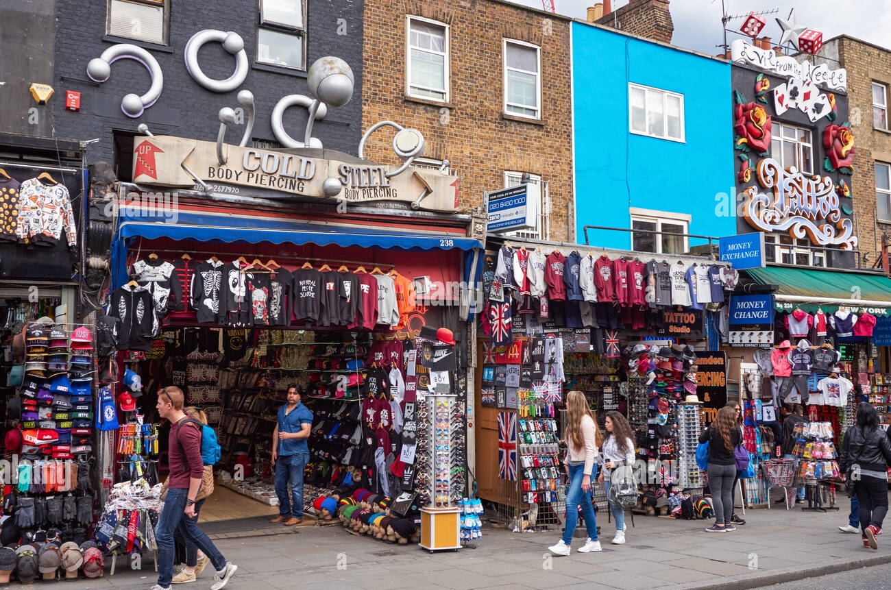

SHOPPING CENTERS


- A shopping center (American English) or shopping centre (Commonwealth English),
also called a shopping complex, shopping arcade, shopping plaza or galleria, is a group of shops.
- In Paris, about 150 covered passages were built between the late 18th century and 1850, and a wealth of
shopping arcades were built across Europe in the 19th century.In the United States, the widespread.
- Starting in 1946, larger, open air centers anchored by department stores were built(sometimes as a collection of
adjacent retail properties with different owners),then enclosed shopping malls starting with Victor
- Center near Minneapolis in 1956. Online shopping has become a major disruptor in the retail industry as
consumers can nowsearchfor product information and place product orders across different regions.
Malls

A shopping mall (or simply mall) is a North American term for a large indoor shopping center, usually anchored by department stores. The term "mall" originally meant a pedestrian promenade with shops along it (that is, the term was used to refer to the walkway itself which was merely bordered by such shops), but in the late 1960s, it began to be used as a generic term for the large enclosed shopping centers that were becoming commonplace at the time.
Shops
Shopping is an activity in which a customer browses the available goods or services presented by one or more retailers with the potential intent to purchase a suitable selection of them. A typology of shopper types has been developed by scholars which identifies one group of shoppers as recreational shoppers,that is, those who enjoy shopping and view it as a leisure activity. Online shopping has become a major disruptor in the retail industry as consumers.